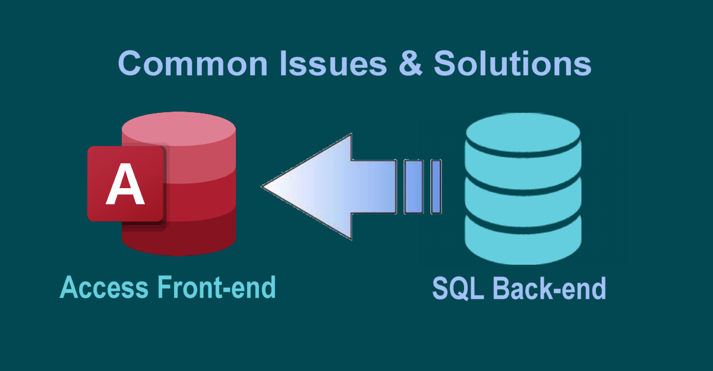

Microsoft Access Front-end with SQL Server Back-end: Common Issues & Solutions
Combining Microsoft Access (front-end) with SQL Server (back-end) offers rapid development alongside enterprise performance, but several technical challenges can occur:

01. Data Modification and #Deleted Errors
Missing Primary Keys, NULL values in BIT fields, or missing TIMESTAMP (RowVersion) columns cause Access to misinterpret record states, leading to write conflicts or errors. Fix: Define PKs, set BIT fields to NOT NULL (default 0), and add RowVersion columns.
02. Network Latency & Slow Loading
Binding forms to large tables or using local VBA functions forces local query execution, pulling large datasets across the network. Fix: Use server-side processing (Views, Stored Procedures, Pass-Through queries) and filter data early using unbound or dynamic forms.
03. Connection Overhead
Constant reconnection causes TCP overhead and drops on unstable networks. Fix: Maintain a persistent background connection to keep the ODBC pipe active, and use Remote Desktop/Citrix over WAN/VPN.
04. Syntax Mismatches
Access SQL and T-SQL differ in wildcards (* vs. %), string quotes (" vs. '), date formatting (# vs. '), and functions (Nz vs. ISNULL).
05. Multi-User Front-End Sharing
Sharing a single .accdb file over a network drive leads to file corruption and lockups. Fix: Deploy local .accde copies to each user's workstation.
06. ODBC DSN Issues
Manual DSN configurations cause deployment errors. Fix: Use DSN-less connection strings via VBA.
Looking to optimize your MS Access & SQL Server database environment? DataCore Systems specializes in high-performance database migrations, connection stability, and enterprise-grade VBA architecture.
Get in Touch